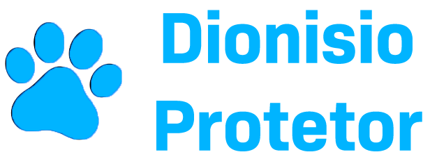

Em um país onde a crueldade contra animais persiste, é essencial nos unirmos em prol da proteção e respeito a esses seres indefesos. A cada dia mais e mais casos de abandono, maus-tratos e abuso surgem, gerando uma realidade de sofrimento que não podemos aceitar.
Dionísio, um símbolo de resistência e defensor incansável da causa animal, nos inspira a lutar por uma mudança significativa. Este movimento visa dar voz aos animais que não podem se defender, através de medidas de conscientização e ações concretas que envolvem a comunidade, as autoridades e todos os cidadãos de boa vontade.
Através desta campanha, buscamos apoiar ações de proteção, como a punição severa aos infratores, a criação de políticas públicas para ajudar as ONGs e abrigos de animais, e a mobilização da sociedade para transformar a realidade de nossos companheiros de jornada.
Unir forças para a implementação de leis mais rigorosas e fiscalizações que realmente funcionem é um dos principais objetivos dessa luta. Além disso, pretendemos criar recursos sustentáveis para organizações independentes que ajudam animais vítimas de abusos, como também viabilizar o apoio à população de baixa renda, oferecendo clínicas veterinárias públicas e programas de alimentação e medicamentos para os animais.
O momento de agir é agora! Se você acredita que todos os seres merecem respeito e dignidade, sua assinatura pode ser a chave para um futuro melhor. Vamos juntos transformar a sociedade e erradicar os maus-tratos aos animais, dizendo sim à vida, à compaixão e ao respeito.
